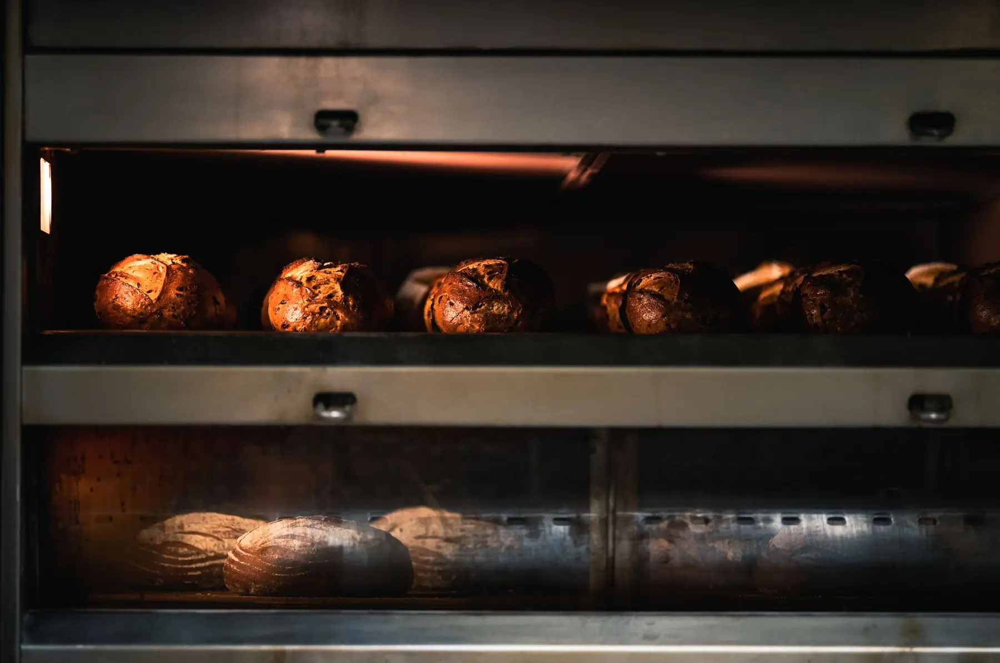
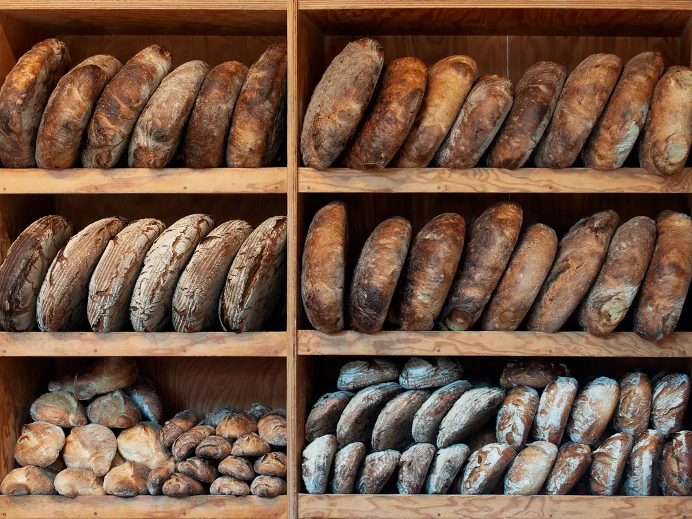
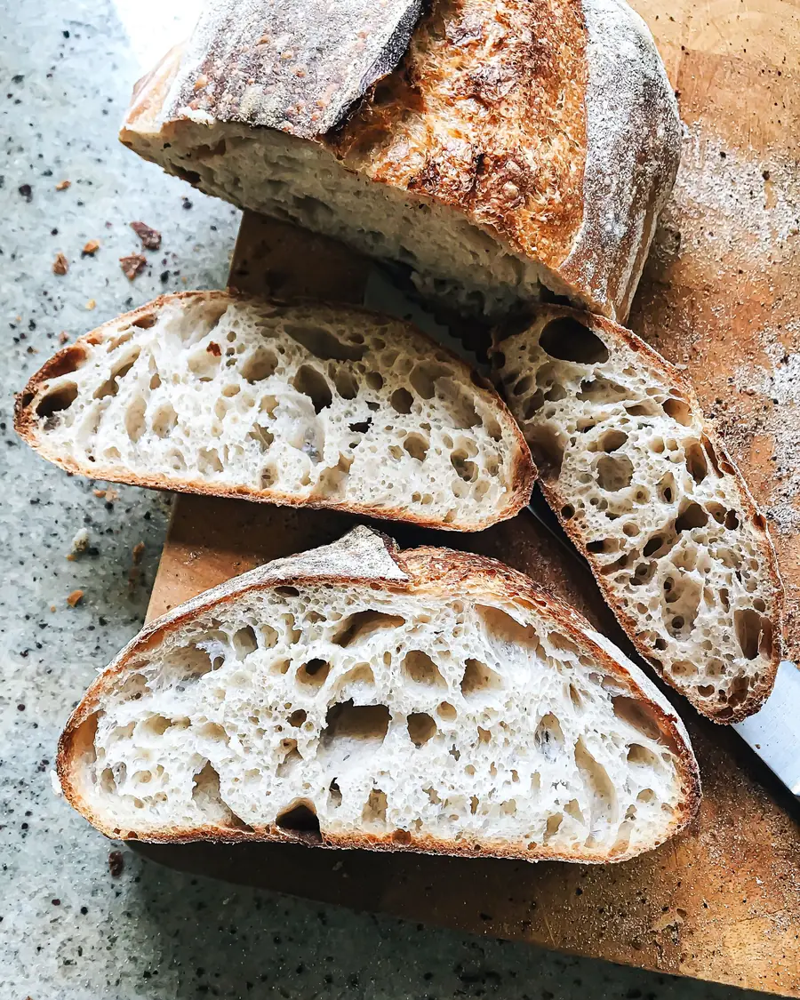
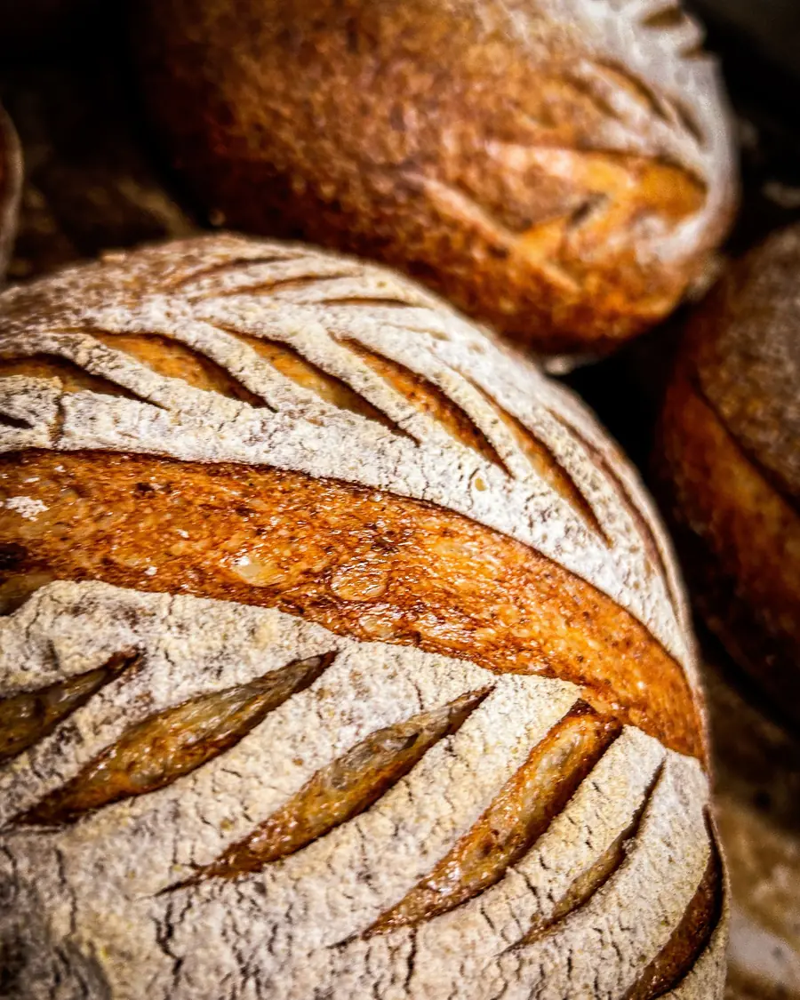

Brutăria de la Tei, sourdough bakery by Lacul Tei
Next out of the oven
11:00
Rye with walnuts, ciabatta, cheese pies

We bake three times a day on Strada Teiul Doamnei, so the bread on the shelf is never older than a few hours. Sourdough only, flour from a mill in Buzău, nothing in the dough you couldn't buy yourself.
Three bakes a day
-
- Country loaf 18 lei
- Half loaf 10 lei
- Butter croissants 9 lei
- Poppy seed covrigi 4 lei
-
- Rye with walnuts 24 lei
- Ciabatta 12 lei
- Telemea and dill pies 11 lei
-
- Country loaf, second bake 18 lei
- Seeded spelt 22 lei
- Cinnamon cozonac slices 9 lei



Saturday sells out by ten
Order by Thursday evening and we'll keep your bread behind the counter with your name on it. Pay when you pick it up.
Or tell us at the counter. Cozonac for Easter and Christmas opens for orders three weeks before.
- Monday to Saturday
- 7:00–19:00
- Sunday
- Closed, we sleep
- Where
- Strada Teiul Doamnei 3, by Lacul Tei